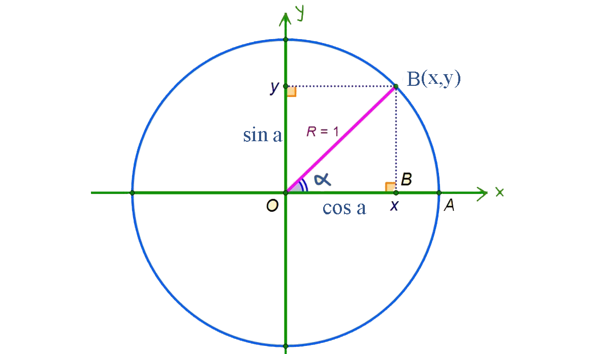

Erkin burçuň sinusy, kosinusy, tangensi we kotangensi

α burçuň sinusy diýip, B nokadyň y ordinatasyna aýdylýar.
α burçuň kosinusy diýip, B nokadyň x absissasyna aýdylýar.
α burçuň tangensi diýip, B nokadyň ordinatasynyň onuň absissasyna bolan gatnaşygyna aýdylýar.
α burçuň kotangensi diýip, B nokadyň absissasynyň onuň ordinatasyna bolan gatnaşygyna aýdylýar.
Alamatlary:
sinα = y =>
{
I we II çärýeklerde
y > 0 => sinα > 0,
III we IV çärýeklerde
y < 0 => sinα < 0 }
cosα = x =>
{
I we IV çärýeklerde
x > 0 => cosα > 0,
III we IV çärýeklerde
x < 0 => cosα < 0 }
tgα = sin α / cos α
ctgα = cos α / sin α
=>
{
I çärýekde x > 0 , y > 0
onda I çärýekde tgα > 0;
ctgα > 0;
III çärýekde x < 0 , y < 0
onda III çärýekde tgα > 0;
ctgα > 0;
=> cosα > 0,
II we IV çärýeklerde
tgα < 0;
ctgα < 0;
}
Jübüt täkligi:

sin( -α)= -y = -sinα;
cos( -α)= -x = -cosα;
tg( -α)=
= -tgα;
ctg( -α)=
= -ctgα;